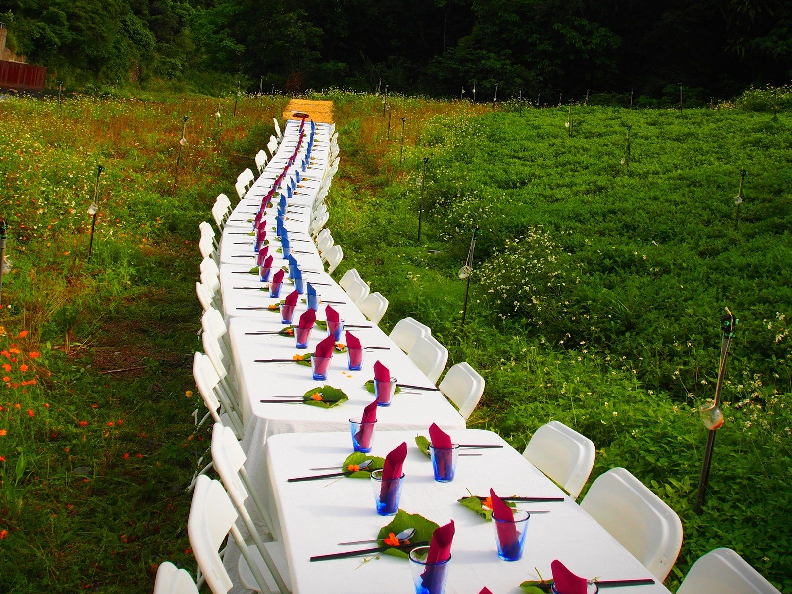
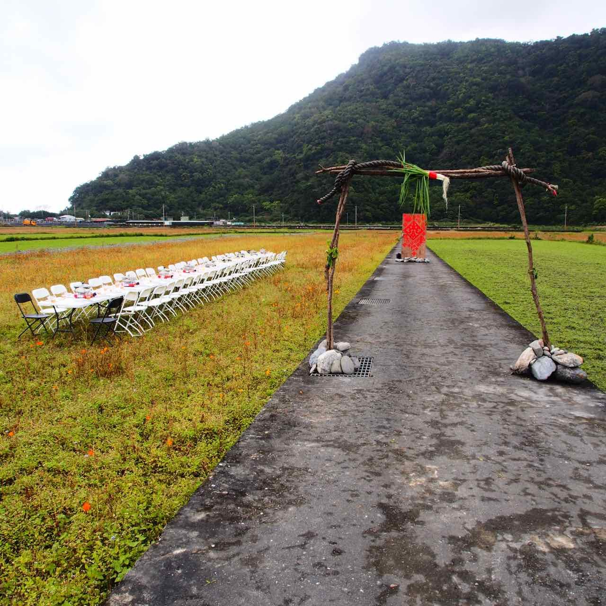
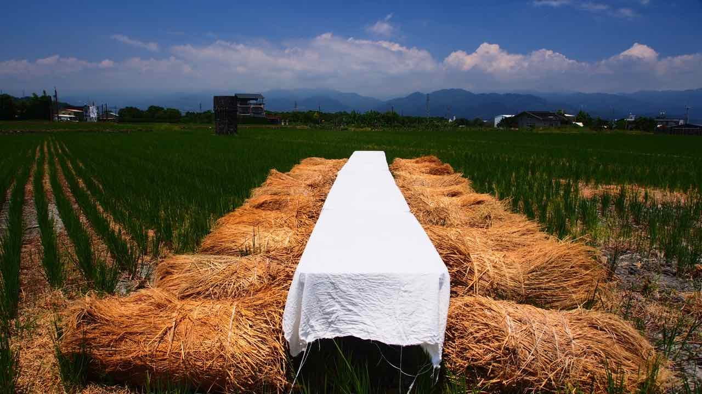

— 01 —
稻田裡的餐桌
Table in the rice field
2012 年發起，是台灣從產地到餐桌的引領性項目。在田間、海邊、茶園、果園擺起餐桌，把職人主廚帶到土地上。十四年來於台灣、香港與中國大陸（河北、四川、雲南、河南、湖南）舉辦超過 200 場，是無數人重新看見土地的起點。現採預約訂製，企業、ESG 專案、團體與個人都可以來談。
| 形式 | 預約訂製・產地餐會 |
| 費用 | NT$ 500,000 起 |
| 地點 | 台灣 / 雲南各地產地 |
| 對象 | 企業 · ESG 專案 · 團體 · 個人 |
| 安排 | 依人數、場地與季節量身規劃 |